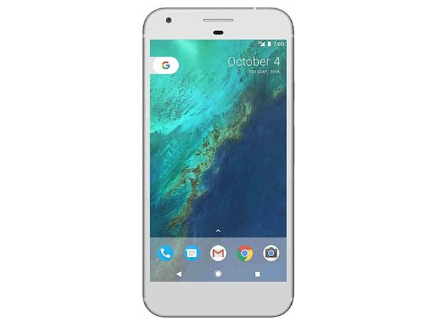

Innovation
Hub
Innovation
Hub
"Today's news for future innovations"
Why Google’s Pixel phones should be a big deal for everyone

In case you missed the news, it was a busy day for Google today. The search giant announced the highly anticipated Pixel and Pixel XL phones among other products. The Pixel phones boast a sturdy body with an impressive camera, and they come with the all new Google Assistant. The design may not be elegant as the Nexus 6P, and the pricing may be unexpectedly high. But everything aside, the October 4th event will always be remembered as a turning point for the company, as Hiroshi Lockheimer tweeted a few weeks ago.Ever since the inception of Android, Google’s presence was there, but not quite there. Of course, Samsung’s immensely popular Galaxy devices use Google’s operating system, but the Galaxy moniker is associated with Samsung, not Google. Even the Nexus devices were limited in that they were manufactured by outside Android OEMs, and there was simply no streamlining. Just look at the LG Nexus 5X and the Huawei Nexus 6P: there is nothing that brings those two together to show that they are Google devices. But with the Pixel phones, it seems Google’s software-centric approach is coming to an end.
Opera for Android gets a major redesign

The VPN-ready Opera browser for Android is receiving an update that should make the user experience a whole lot more modern and fresh, not to mention in line with Google’s Material Design. As the Norwegian company put it, it’s a “serious lick of paint.”
Changes in the design of Opera’s start page abound: the familiar Speed Dial has a new home on the leftmost screen of the carousel. Swiping to the right will take you through a news feed that you can customize to include information you care about. Adding and removing topics can be done by tapping the “+” icon on the right. You can also access “reader mode” from here.
The bottom navigation bar has been redesigned. To the right of the bar, you’ll find a “person” icon that gives you access to offline pages, bookmarks, history and downloads. If you decide to sign in, you’ll be able to synchronize your Speed Dial, bookmarks, tabs and history across multiple devices.
Snapchat’s Spectacles will let you record your life, 10 seconds at a time
If Google Glass isn’t quite your thing, you might find Snapchat’s new camera-equipped glasses a bit more fun to wear, once they hit the shelves this fall for $130.
CEO Evan Spiegel just took the wraps off Spectacles, the first wearable from Snapchat and the company’s first foray into hardware since its founding five years ago. The product, which looks a lot like a pair of regular sunglasses, first showed up in a video leaked by Business Insider, and Snapchat was quick to confirm that the rumor was real.
Spectacles is designed to record 10-second videos captured with a fish-eye lens. Just tap a button near the glasses’ hinge and you can start recording videos in a circular format that is supposed to simulate a human’s field of view.
More specifically, Spectacles captures videos in a 115-degree field of view, setting it apart from typical mobile cameras and action cams already out in the market. You can sync the glasses with your mobile device to quickly share your “memories,” preferably over Snapchat, of course.